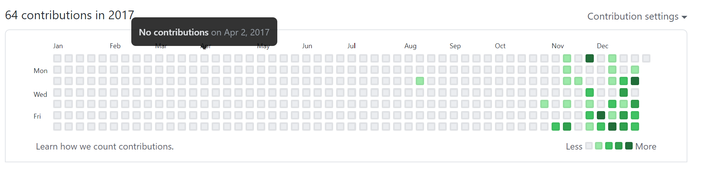
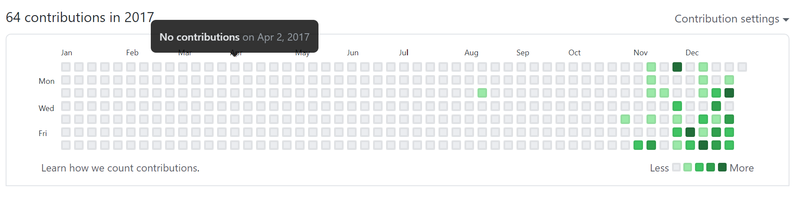
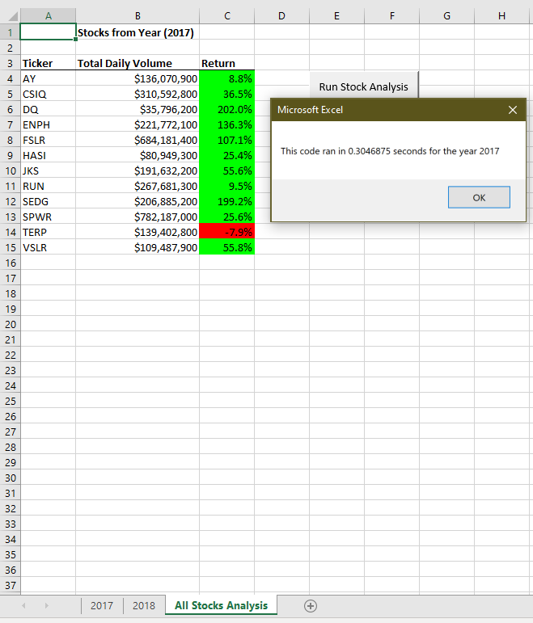
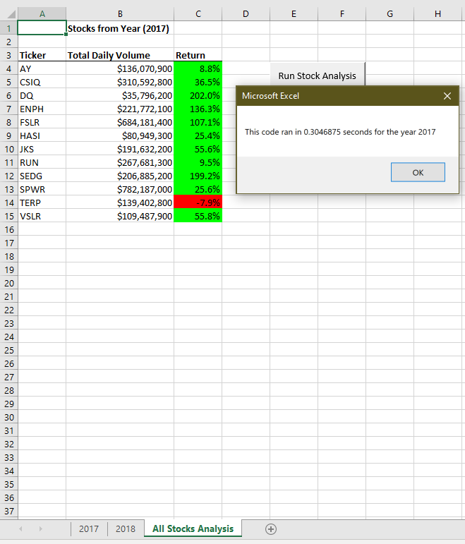
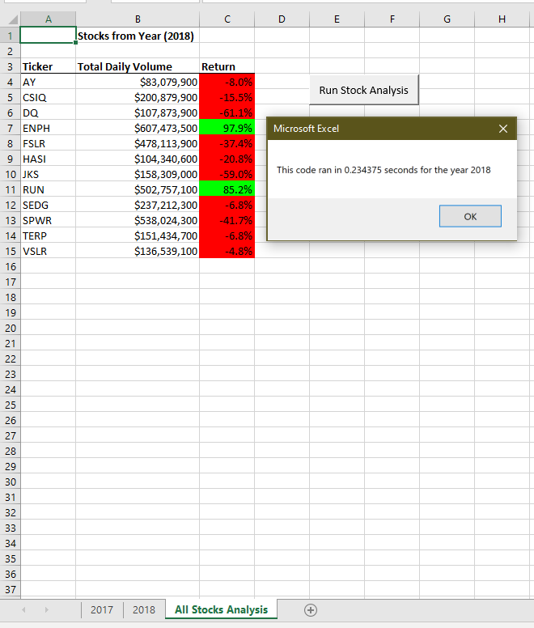
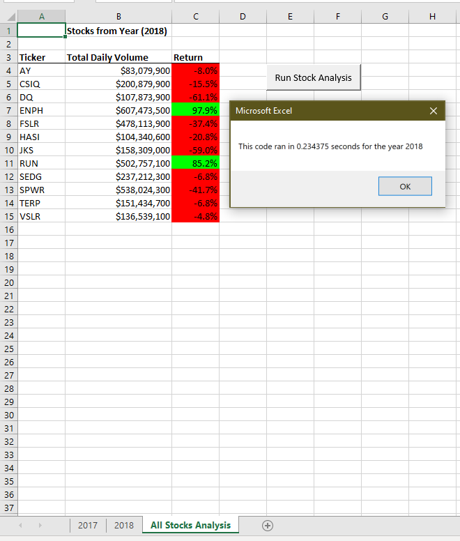

 

 



SQL Database Manipulation with Javascript and Node

Gamazon
Utilized MySql to create a product list that displays to users. When user wants to buy an item, the database updates the amount and shows the user the purchase order costs. If there isn't enough of the product left in stock, the database doesn't fulfill the order, and tells the user.
Overview
Created Amazon-like storefront with the MySQL. The app takes in orders from customers and deplete stock from the store's inventory. Tracks product sales across store's departments and then provide a summary of the highest-grossing departments in the store.
1. Created a MySQL Database.
2. Create a Table inside of that database called products.
3. The products table has the following columns:
* product_name (Name of product)
* department_name
* price (cost to customer)
* stock_quantity (how much of the product is available in stores)
4. Created a Node application called bamazonCustomer.js. Running this application first displays all of the items available for sale. Include the ids, names, and prices of products for sale.
5. The app prompts users with two messages:
* Inquery of the ID of the product they would like to buy.
* How many units of the product they would like to buy.
* Once the customer has placed the order, application checks if store has enough of the product to meet the customer's request.

LIRI Bot
It's like iPhone's SIRI
Overview
while SIRI is a Speech Interpretation and Recognition Interface, LIRI is a _Language_ Interpretation and Recognition Interface. LIRI is a command line node app that takes in parameters and gives you back data. It searchs Spotify for songs, Bands in Town for concerts, Twitter for tweets and OMDB for movies.
Liri App takes in one of the following commands:
* concert-this
* spotify-this-song
* movie-this
* do-what-it-says
What Each Command Does

1. node liri.js concert-this:
This will search the Bands in Town Artist Events API
("https://rest.bandsintown.com/artists/" + artist + "/events?app_id=
* Date of the Event
* Name of the venue
* Venue location

2. node liri.js spotify-this-song:
This will show the following information about the song in your
terminal/bash window:
* Artist(s)
* The song's name
* A preview link of the song from Spotify
* The album that the song is from
* Album date

3. node liri.js movie-this:
This will output the following information to your terminal/bash
window:
* Title of the movie.
* Year the movie came out.
* IMDB Rating of the movie.
* Rotten Tomatoes Rating of the movie.
* Country where the movie was produced.
* Language of the movie.
* Plot of the movie.
* Actors in the movie.
4. node liri.js do-what-it-says:
Using the fs Node package, LIRI will take the text inside of
random.txt file and then use it to call one of LIRI's commands.
* It should run spotify-this-song for "I Want it That Way," as
follows the text in random.txt.
* Edit the text in random.txt to test out the feature for
movie-this, concert-this and my-tweets.
CRUD A Burger App

SQL, Node, Express, Handlebars App
In this app we test the safe manipulation of data on a SQL database server through the use of a web app. Here you can create, read, update and delete a restaurant's burger order, CRUD. We used HTML, CSS, BootStrap, JavaScript, JQuery, Font Awesome, Express, Node, Handlebars, MSQL, GitHub and Heroku to create this app. We maintain the status of orders of a burger restaurant (yum!).
MVC Directories structure:
├── config
│ ├── connection.js
│ └── orm.js
│
├── controllers
│ └── burgers_controller.js
│
├── db
│ ├── schema.sql
│ └── seeds.sql
│
├── models
│ └── burger.js
│
├── node_modules
│
├── package.json
│
├── public
│ └── assets
│ ├── css
│ │ └── burger_style.css
│ └── img
│ └── burger.png
│
├── server.js
│
└── views
├── index.handlebars
└── layouts
└── main.handlebars